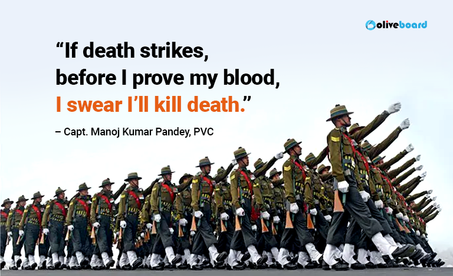
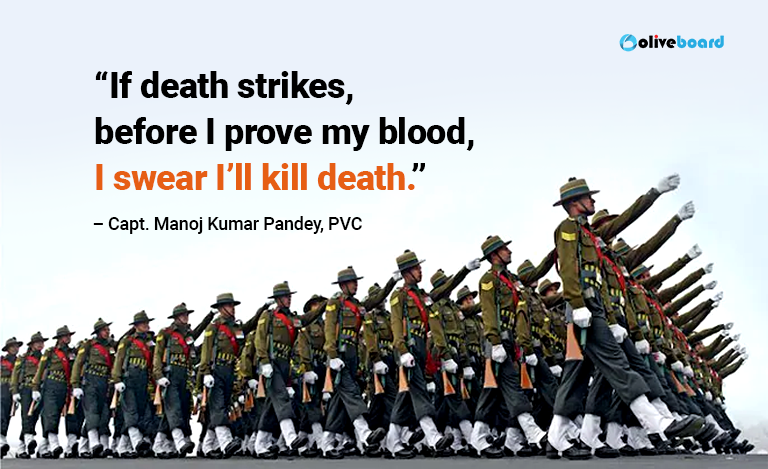

ABOUT US


"The Warrior" is a creation crafted with passion and dedication by Vaishnavi Saxena .
Welcome to our sacred space, a digital sanctuary dedicated to
the heroes who stand as sentinels of our nation's pride – our
beloved soldiers.
Here, amidst the digital tapestry of gratitude and reverence, we
invite you to embark on a journey of the heart. Our mission is
simple yet profound: to celebrate, honor, and uplift those whose
bravery knows no bounds.
Step into a world where every click, every scroll, is a testament
to the unwavering dedication of our soldiers. This is more than a
website; it's a symphony of appreciation, a chorus of thanks that
echoes across mountains and valleys, reaching the farthest
corners of our nation.
Explore our treasure trove of heart-touching stories, each one a
beacon of inspiration, a reminder of the sacrifices made by our
heroes. Immerse yourself in their tales of valor, resilience, and
unwavering commitment, and let their courage ignite a flame of
pride and gratitude within you.
But we're not just here to admire from afar – we're here to make
a difference. Join us in spreading love and appreciation to our
soldiers, sending messages of thanks that warm their hearts
and uplift their spirits.
Together, let's paint a picture of love and gratitude so vibrant
and beautiful that it lights up the darkest nights and fills the
bravest hearts with hope. Welcome to our world – a world where
heroes are celebrated, and gratitude knows no bounds.